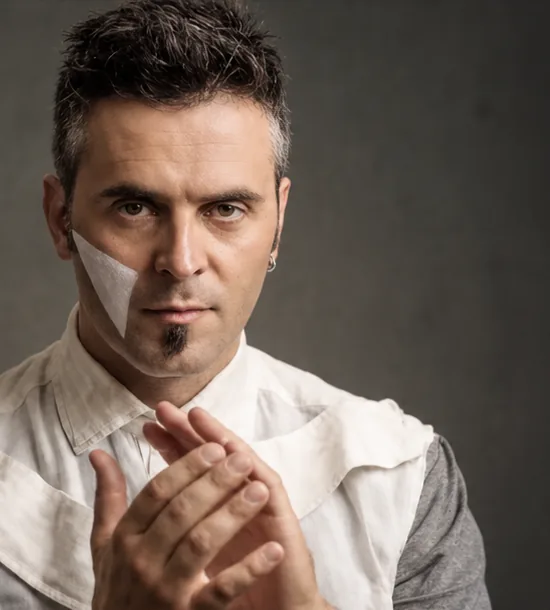

La poesia della musica da camera
Un percorso in cui musica e poesia si attraversano. La parola apre una soglia, il suono la percorre.
Il programma accosta pagine di Fauré, Sibelius, Grieg, Piazzolla, Elgar e Morricone a tre composizioni originali di Nicola Elias Rigato, proponendo trascrizioni per trio di brani orchestrali.
I versi di Rigato, Muschitiello e Taverna costruiscono un itinerario verso la contemplazione. Attraverso il dialogo tra musica e poesia, lo spettacolo offre uno spazio per riconoscersi nelle emozioni, riscoprire la bellezza dell'ascolto del repertorio cameristico tra intimità e potenza, facendo luce anche sulle ombre dell'esperienza umana.
«Non esiste l'ombra, è soltanto poca luce»
Il programma
- Nicola Elias Rigato · Crypt
- Gabriel Fauré · Après un rêve (trascr. Rigato)
- Nicola Elias Rigato · Cosmically
- Jean Sibelius · Valse triste (trascr. Rigato)
- Morricone / Rigato · Love theme (da Nuovo Cinema Paradiso)
- Edvard Grieg · Andante con moto
- Nicola Elias Rigato · Incompiuto
- Astor Piazzolla · Primavera porteña (trascr. Bragato)
- Edward Elgar · Salut d'amour (trascr. Rigato)
La drammaturgia
- Le rovine di Babele
- Nel nero che declina
- Il tramonto perdura in un'ora
- Quando la notte è senza luna
- Intermezzo strumentale
- Incompiuto
- Fammi guardare, Dio, il Tuo vento
- Terra insegnaci
- Si rivela come una campana


Il Trio Ajar: pianoforte, violoncello, violino.
Gli interpreti
Il Trio Ajar riunisce tre musicisti di formazione classica; la voce recitante dà corpo ai versi.
Nicola Elias Rigato, pianoforte e composizione. Pianista e compositore, diplomato con lode e menzione d'onore, pubblica con Universal Edition. Vincitore del Premio Internazionale Don Sante Montanaro, ha collaborato con RAI5 e l'Orchestra Sinfonica di Sanremo. Sue opere sono state incise da Da Vinci Records. È fondatore di We-Choir e docente presso la Four Piano Academy.
Luca Talassi, violoncello. Formatosi con Marianne Chen e Luigi Puxeddu, è vincitore di concorsi nazionali, tra cui il Premio Alberghini. Dal 2023 collabora con l'Orchestra Giovanile Luigi Cherubini, fondata da Riccardo Muti, e ha conseguito l'idoneità presso I Pomeriggi Musicali di Milano.
Domenico Nicola Percetti, violino. Diplomato con lode e menzione d'onore in Violino e Musica da Camera, si distingue nell'interpretazione del repertorio moderno e barocco. Premiato al Concorso Internazionale "Tartini ad Ancona", collabora con Frau Musika ed è stato primo violino e concertatore dell'Orchestra Barocca delle Marche.
Alessandro Alfonsi, voce recitante. Musicista, attore e compositore, laureato al DAMS in Teatro e diplomato in Musica Jazz. Si è formato con Vasco Mirandola, Ewa Benesz ed Enrico Bonavera. Fondatore e direttore artistico di Sonic Poets, unisce musica e recitazione in produzioni originali. Con gli Psycodrummers ha collaborato con Giorgia, Achille Lauro e Levante, esibendosi anche a X Factor.
